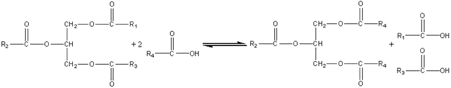

|
|
Interesterification of lipidsThere is no opportunity or established need to build up polymers or oligomers using lipases or esterases yet it is possible and commercially advantageous to use these enzymes as transferases in transesterifications (carboxyl group exchange between esters), acidolyses (carboxyl group exchange between esters and carboxylic acids) and alcoholyses (alcohol exchange between esters and alcohols). Certain triglycerides, cocoa butter being the outstanding example, have high value because of their physical properties and comparative rarity. There is a commercial pull, therefore, to fund routes to the production of high value triglycerides from more plentiful, cheaper raw materials. This may be done using lipases (e.g., ex.Rhizopus or ex. Mucor Miehei) acting as transacylases.  This acidolysis reaction may be used for increasing the value of rapeseed oil by exchanging linoleic acid for linolenic acid residues and increasing the value of palm oil and sunflower oil by increasing their content of oleic acid residues. Cocoa butter is a relatively expensive fat, used in confectionery, because of its sharp melting point between room temperature and body temperature; chocolate literally melts in the mouth. This is due to the fairly small variation in the structure of the constituent triglycerides; 80% have palmitic acid or stearic acid in the 1 and 3 positions with oleic acid in the central 2 position. For the production of cocoa butter substitute from palm oil, a process which increases the value of the product three-fold, the acidolysis utilises stearic acid (i.e., R4 is C17H35) in hexane containing just sufficient water to activate the lipase. Olive oil may be similarly improved by exchanging its 1,3-oleic acid residues for palmityl groups. The products may be recovered by recrystallisation from aqueous acetone. Such reactions may also be used for the resolution of racemic mixtures of carboxylic acids or alcohols, the lipase generally being specific for only one out of a pair of optical isomers. The secret of success has been the selection of lipases with the correct specificity and the selection of reaction conditions that favour transacylation rather than hydrolysis. Because the hydrolytic activity of industrial lipases is 10 - 15 times the transacylation activity, it is advantageous to minimise the water content of the reaction system and use the aqueous/organic biphasic systems described earlier.An example of lipase being used in an alcoholysis reaction is the biphasic production of isoamyl acetate, a natural aroma. lipase This page was established in 2004 and last updated by Martin
Chaplin |